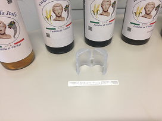
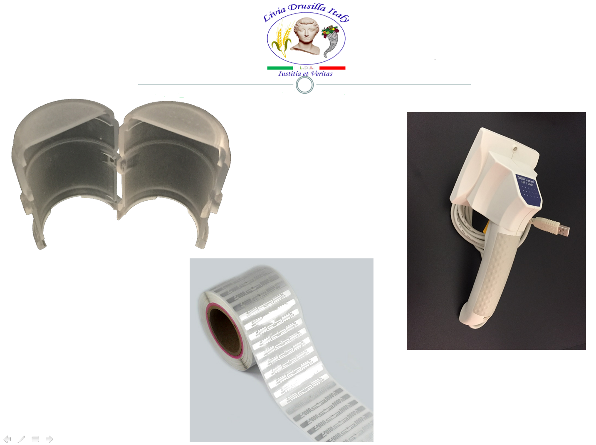
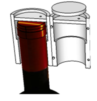
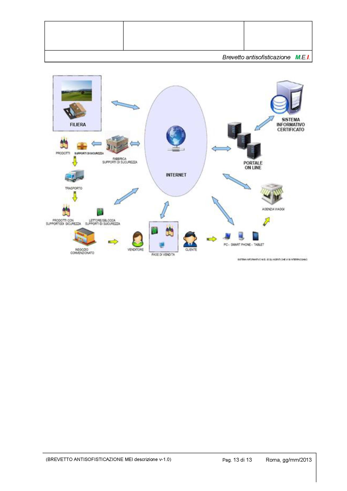
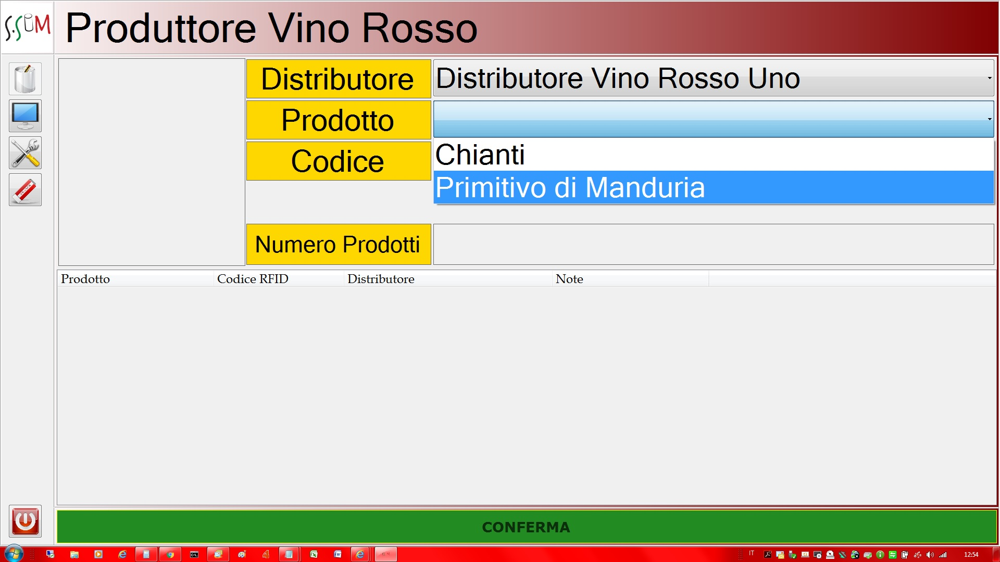
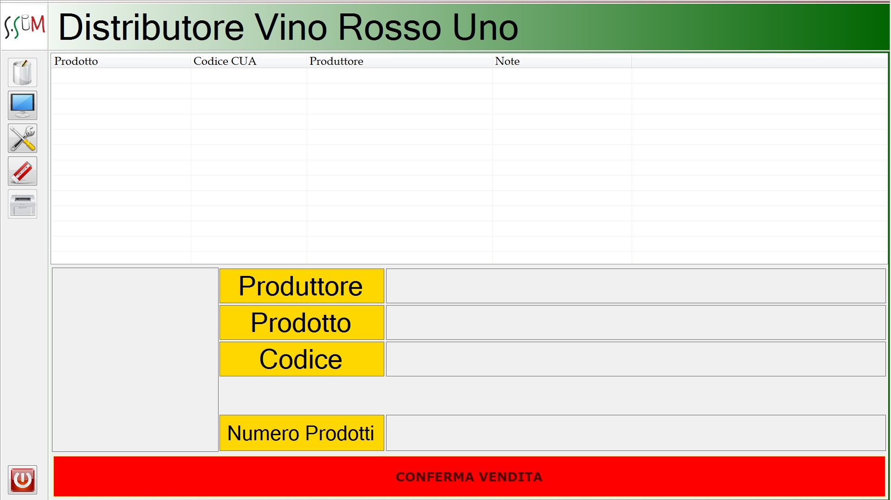

Livia Drusilla Italy
¿Quién Livia Drusilla?
Él nació en el año 58 aC hija de Marco Livio Druso Claudiano y casados (alrededor de quince años) para Tiberio Claudio Nerone. El heredero adoptivo del gran líder fue Ottaviano Augusto, el futuro emperador de Roma.
Mujer
Livia era una esposa perfecta y hábil cocinero que se preocupó personalmente propio huerto en el Villa Prima Porta. A pesar de no haber generado los hijos del emperador nunca fue repudiado. Augusto probablemente no lo hizo porque estaba realmente enamorada y por qué 'estaba seguro de tener ya 'un descenso seguro, gracias a su primera esposa Escribonia. Pero 'ninguno de los nietos de Augusto sobrevivió y el encendido' fácilmente a Tiberio segundo hijo de Livia (Druso Maggiore había muerto en la batalla).
Fanático de la salud
se dice que Livia sugirió como un secreto de la longevidad 'una copa de vino por comida, recuerde que Livia vivió hasta los 86 años, Livia estaba sobrio y no vinos mezclados, utilizando un único 'etiqueta', Il Pucino, producida por un selezionatissimo vid , cultivada no muy lejos de las bocas timavo y después de que 'debido a la Prosecco moderna. También fue atento al cuidado del cuerpo seguidor de las doctrinas del médico Asclepiade, quien además de prescripción de dieta, ejercicios pasivos, masajes y baños fue defensor de consumo de vino, siempre y cuando "todo esto moderada, porque
Dispositivo a prueba de manipulaciones para botellas
D A B

Multimedia contents.
Proyecto D.A.B.
Contenu multimédia Entretien "Giro d'Italia dei Vini 2016"
follow the images the Process applied.
click the images to see details








Contact us:
Leave a comment:
{kind=link}